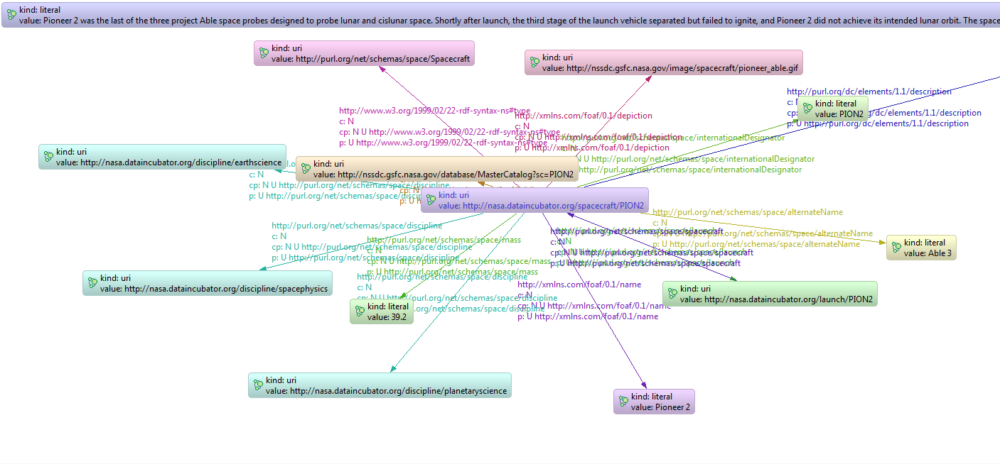

Previous document explained with a lot of details how it was possible to store POJOs ina graph using gaedo. This document focuses on the opposite approach : how to start from a pre-existing graph and have it transformed into usable Java objects.
An example graph
For that, lets use a classical - and cool - example graph. This cool example will be the nasa.nt (look in src/test/resources for a lite version) file listing some of the most prominent spacecrafts launch of history (borrowed from Empire-RDF tests).
A small extract of that graph can be viewed here.

As one may immediatly note, elements of this graph have no associated java type (with relations java.lang.Object:classes or java.lang.Object:type), neither a class-built id.
It however has a relationship to a type: http://www.w3.org/1999/02/22-rdf-syntax-ns#type. But, unfortunatly, that relationship doesnt targets a java class, but another URI : http://purl.org/net/schemas/space/Spacecraft. In a future version, gaedo might be able to associate, staticaly or dynamicaly, that URI to a java class. But for now, unfortunatly, it is unable to.
As a consequence, I have decided all objects loaded from so-called generic nodes are to be written in properties bags very similar, by their design concept, to commons beanutils DynaBeans class : the PropertyBagMap
What a nice bag you have !
That PropertyBagMap is a class that implements two interfaces :
- PropertyBag targetted to user code, allows one to get the list of available property and, for each property, list the values associated to that property (more on that later)
- PropertyBagPropertyAccess is the framework counterpart of PropertyBag. it provides more or less the same features, except that it uses Property where PropertyBag uses String. This obviously increases the confidence one can have in code allowing values exchanges between PropertyBagMap and its associated vertex in graph, at the code of a less readable code. I wont talk any more about that interface, so please forget it and never use any of its methods.
But, you may ask, what are those properties Im talking about ?
Quite easy. In the upper example graph, the properties the PropertyBagMap instance will have are all the edges declared around the vertex I want to load as on object. As an example, the vertex http://nasa.dataincubator.org/spacecraft/PION2 will have as dynamic properties (accessible only using PropertyBag interface)
- http://www.w3.org/1999/02/22-rdf-syntax-ns#type
- http://xmlns.com/foaf/0.1/depiction
- http://purl.org/net/schemas/space/internationalDesignator
- http://purl.org/dc/elements/1.1/description
- http://purl.org/net/schemas/space/alternateName
- http://purl.org/net/schemas/space/discipline
- http://purl.org/net/schemas/space/mass
- http://xmlns.com/foaf/0.1/homepage
I talked about the fact that one can list values associated to a property in a PropertyBag. Why ?
Because as available properties are defined by the vertex, and not by any Java class, it is not possible to have any meaningfull ifnormation about the expected cardinality of a property. As an example, what allows us to be sure that the http://www.w3.org/1999/02/22-rdf-syntax-ns#type property has one single value ? Nothing. As a consequence, I choosed to consider all properties as multivalued and, as a consequence, to store them as list.
Obviously, those lists values are typed according to the expressed type of value. As an example, for http://nasa.dataincubator.org/spacecraft/PION2, the values of http://purl.org/net/schemas/space/mass will be a List of one element containing the string 39.2. Why a string ? Because its an untyped literal (the vertex has no type property allowing agedo to transform that string into something more meaningfull).
But how do I fill that bag from my graph ?
Loading an object from the graph is no more complicated than with normal Java classes, like the PropertyBagTest example well shows.
- Create a good servcie
- Use all gaedo goodness youre used to
Creating a good service which mapping strategy is graph-driven is quite simple. You may have notice recent (0.3 and 0.4) versions of gaedo clearly jumped the shark regarding constructors. Lets use as an example the IndexableGraphBackedFinderService (let me just tell you its in fact the only usable service, as the SailGraphBackedFinderServicerelies upon some messy code that wont stay long live).
First, construct a service with the right mapping strategy
Inf act, its not that complicated : use the right constructor and the right parameter value, the right constructor being
/**
* Construct a gaedo servcie allowing reading/writing to an indexable graph
* @param graph graph we want to write/read to/from
* @param containedClass class we want to map to that graph
* @param informerClass informer used to allow easy queries on that class
* @param factory informer factory
* @param repository service repository, to load other classes
* @param provider property provider
* @param strategy mapping strategy. If bean based, the bean fields will define which edges are read/written. If graph based, that's the edges that define how the object will be loaded.
*/
public IndexableGraphBackedFinderService(IndexableGraph graph, Class<DataType> containedClass, Class<InformerType> informerClass, InformerFactory factory,
ServiceRepository repository, PropertyProvider provider, StrategyType strategy) {
Which would be implemented as
new IndexableGraphBackedFinderService(graphTouse, PropertyBagMap.class, PropertyBagInformer.class, factoryTouse, repositoryToUse, providerToUse, StrategyType.graphBased);
And the right argument being to use as StrategyType the StrategyType.graphBased value. Notice that, in this aprticular case, defining a repository is quite irrelevant, as this mapping strategy by considering the graph as the source for type will (fo now) make all loaded vertices instances of PropertyBagMap, even if they could be loaded as valid Java objects using StrategyType.beanBased
Then use it
As I said earlier, all classical read/write operations are available obviously with some twists
All bags are not filled the same
Lets start with findAll, your prefered performance bottleneck. Suppose you call it on your graph. it will obviously load ALL vertices from the graph as (let me repeat) as it uses the graph as property source, it considers all vertices having the uri kind as valid PropertyBagMap objects. If you find that acceptable well, good to you, but Im quite sure you wont have that opinion long.
Indeed, there is an other scary thing to know.
When using StrategyType.beanBased the deepness at which the graph must be explored is totally determined by Java classes. Its a cool thing as, provided your model is not totally connected, it is possible to have an application that is guaranteed to never load all graph vertices.
This is unfortunatly not the case with Strategy.graphBased : when loading a compatible vertex (one with the uri kind), all its linked vertices will also be loaded. This should immediatly raise warnings in your head, as a semantic graph is usually totally connected (and may be highly cyclic). indeed, as all connected vertices will be loaded, if one of these vertices is also elligible to be a PropertyBagMap, this vertex will be loaded into an object, which associated vertices will in turn be loaded Well, you get the point : its really easy to load the whole graph in memory this way.
using our now classical example, one can see that http://nasa.dataincubator.org/spacecraft/PION2 is linked to some vertices that will be loaded as PropertyBagMap :
- http://www.w3.org/1999/02/22-rdf-syntax-ns#type is http://purl.org/net/schemas/space/Spacecraft, which is an URI that will be loaded as a PropertyBagMap.
- http://xmlns.com/foaf/0.1/depiction is http://nssdc.gsfc.nasa.gov/image/spacecraft/pioneer_able.gif, which is an URI that will be loaded as a PropertyBagMap.
- http://purl.org/net/schemas/space/internationalDesignator is the literal PION2
- http://purl.org/dc/elements/1.1/description is a bloody long literal
- http://purl.org/net/schemas/space/alternateName is the literal Able 3
- http://purl.org/net/schemas/space/discipline is a list of uris : http://nasa.dataincubator.org/discipline/planetaryscience, http://nasa.dataincubator.org/discipline/spacephysics and http://nasa.dataincubator.org/discipline/earthscience``, which all will be loaded as aPropertyBagMap`
- http://purl.org/net/schemas/space/mass is the literal `39.2
- http://xmlns.com/foaf/0.1/homepage is the uri http://nssdc.gsfc.nasa.gov/database/MasterCatalog?sc=PION2 which will be loaded as a PropertyBagMap.
As a consequence, to avoid that, a design decision has been made : when using graphBased strategy, only first-level vertices are loaded into objects. Which means that if these associated vertices are loaded as PropertyBagMap, they have absolutely no dynamic properties loaded (as one test - PropertyBagTest#make_sure_only_RootVertex_Is_Totally_Loaded() - clearly checks), but only their id (which allow later loading them using findById().
A different kind of id
So, to get an object one already know, the findById() method can indeed be used. Give it the objects uri (yup, id and uris will always be the same), and it will load without any trouble (and the aforementioned limitation regarding deepness of the enttity graph).
Notie that this uri will aalways be available by calling PropertyBag#getId().
How to find a particular bag ?
Well, if findAll and findById(), you expect find() and dynamic queries to work, right ? wrong in a sense.
The find() and QueryBuilder idio will work, provided you use the correct property name and informer type. But dyanmic queries wont work (mainly due to the fact that uris arent good method names. Of course I could have thought about an alternatlive mechanism involving annotations and properties synonyms, but it would really had been a nightmare).
So, its indeed possible to query the graph on a combination of properties. Property name to use is, as you can easily imagine, the property uri.
As an example, to find Pioneer 2, one could search the graph by http://purl.org/net/schemas/space/internationalDesignator having as value PION2.
So, considering service is named service, it could be obtained by the following query :
service.find().matching(new QueryBuilder() {
@Override
public QueryExpression createMatchingExpression(PropertyBagInformer informer) {
return ((CollectionFieldInformer) informer.get("`http://purl.org/net/schemas/space/internationalDesignator`")).containing("PION2");
}
}).getAll();
One might ask why is the informer casted to CollectionFieldInformer. The answer to that question has some brutal simplicity : as we consider all properties to be multivalued (remember paragraph What a nice bag you have ?), the returned FieldInformer is o adapted type, and as a consequence a CollectionFieldInformer.
And of course obtained values have the classical graph depth limitation : their PropertyBag values are loaded, but those values have no loaded properties.